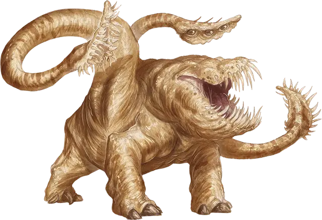

Отидж
Otyugh
Большая Аберрация, нейтральная

Класс Доспеха 14 (природный доспех)
Хиты 114 (12к10 + 48)
Скорость 30 футов
| мод | спас | ||
|---|---|---|---|
| СИЛ | 16 | +3 | +3 |
| ЛОВ | 11 | +0 | +0 |
| ТЕЛ | 19 | +4 | +7 |
| мод | спас | ||
|---|---|---|---|
| ИНТ | 6 | −2 | −2 |
| МДР | 13 | +1 | +1 |
| ХАР | 6 | −2 | −2 |
Чувства тёмное зрение 120 футов, пассивное Восприятие 11
Языки Отиджский
Опасность 5 (1800 опыта)
Бонус мастерства +3
Среда обитания Подземье
Особенности
Ограниченная телепатия. Отидж может магическим образом передавать простые послания и образы любому существу в пределах 120 футов, понимающему любой язык. Эта телепатия не позволяет существу давать телепатический ответ.
Действия
Мультиатака. Отидж совершает три атаки: одну укусом, и две щупальцами.
Укус. Рукопашная атака оружием: +6 к попаданию, досягаемость 5 футов, одна цель. Попадание: Колющий урон 12 (2к8 + 3). Если цель — существо, она должна преуспеть в спасброске Телосложения Сл 15 от болезни, иначе станет отравленной, пока болезнь не будет вылечена. Через каждые прошедшие 24 часа цель должна повторять спасбросок, уменьшая максимум хитов на 5 (1к10) при провале. При успехе болезнь излечивается. Цель умирает, если болезнь уменьшает максимум её хитов до 0. Это уменьшение хитов длится до тех пор, пока болезнь не будет вылечена.
Щупальце. Рукопашная атака оружием: +6 к попаданию, досягаемость 10 футов, одна цель. Попадание: Дробящий урон 7 (1к8 + 3) плюс колющий урон 4 (1к8). Если размер цели не больше Среднего, она становится схваченной (Сл высвобождения 13) и опутанной, пока не перестанет быть схваченной. У отиджа есть два щупальца, и каждое может схватить по одной цели.
Удар щупальцем. Отидж ударяет схваченных существ друг о друга или о твердую поверхность. Каждое существо должно преуспеть в спасброске Телосложения Сл 14, иначе получит дробящий урон 10 (2к6 + 3) и станет ошеломленной до конца следующего хода отиджа. При успешном спасброске цель получает половину дробящего урона и не становится ошеломленной.
Описание
Отидж — это гротескное существо с луковицеобразным телом на трех крепких ногах, глаза и нос которого расположены на стебле, растущем из верхней части раздутого тела. Два упругих щупальца заканчиваются остроконечными листовидными придатками, которыми отидж загребает пищу в разинутую пасть.
Отидж зарывается под кучами отбросов и падали, оставляя на поверхности только сенсорный стебель. Когда съедобное существо проходит мимо, щупальца вырываются из под мусора и хватают добычу.
Отиджи пользуются всеми возможностями засады, чтобы можно было пожрать добычу. Они используют ограниченную форму телепатии для заманивания добычи к логову, иногда выдавая себя за кого-то другого.
Живущий во тьме. Отидж терпит свет только в случае, когда большие кучи падали и мусора находятся в пределах досягаемости. В пустошах они обитают в стоячих болотах, замусоренных прудах и влажных лесных лощинах. Запах могильников, городских канализационных коллекторов, деревенских навозных куч и скотных загонов привлекает их в цивилизованные области.
Поскольку отиджей интересует только пища, в их гнездах иногда скапливаются различные сокровища от их жертв вперемешку с хламом.
Симбиотические охранники. Разумные обитающие под землей существа сосуществуют с отиджами, используя их как утилизаторов мусора. На таком обильном питании отиджи жиреют в своих лежбищах, более не движимые другими желаниями и мотивами. Эта неподвижная прожорливость делает их надежными охранниками. До тех пор, пока он накормлен, отидж воздерживается от нападения на других существ. Тем не менее, потенциальный хозяин отиджа может недооценить потребное количество отходов, падали и мяса, чтобы удержать его от блужданий в поисках еды. Немало хозяев было сожрано «тренированными» отиджами после того, как пища заканчивалась в его лежбище.